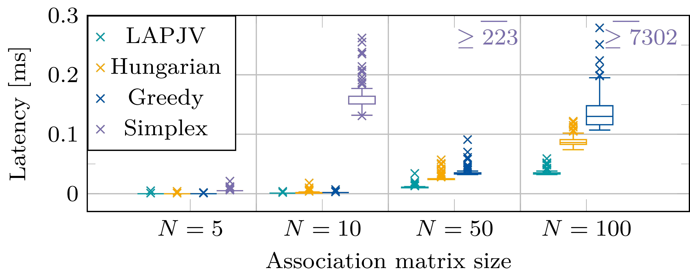

Runtime Analysis Associator
We performed a runtime analysis of four associators implemented in Ufil: Greedy, LP-solver, Hungarian, and Jonker-Volgenant (LAPJV). For the analysis we tasked each associator with solving the same assignment problem 100 times, and measured the average runtime for each method. The results are illustrated in the boxplot below, which shows the distribution of runtimes for each method across the 100 runs. The analysis was performed on a cost matrix of size 5x5, 10x10, 50x50, and 100x100, which are representative of typical association problems in tracking applications. We conducted the test on a MacBook Pro with an Apple M2 Pro chip with 16GB RAM, running macOS Tahoe 26.3.
{kind=link}

Runtime analysis of the Greedy, LP-solver, Hungarian, and Jonker-Volgenant (LAPJV) associators on cost matrices of size 5x5, 10x10, 50x50, and 100x100. The boxplot illustrates the distribution of runtimes for each method across 100 runs.
The analysis shows that Hungarian and Jonker-Volgenant algorithms have similar runtimes, with the Jonker-Volgenant algorithm being slightly faster on average. The LP-solver method has a significantly higher runtime compared to the other methods, which is expected given its more complex optimization approach. The Greedy associator has the lowest runtime on smaller matrices, but its runtime increases significantly as the matrix size grows, which is consistent with its non-optimal nature.
Hint
For a infrastructure-based perception system we recommend using the Jonker-Volgenant algorithm for optimal assignments, as it provides a good balance between runtime and solution quality. The Hungarian algorithm is also a viable option, especially if the cost matrix is small. Both the LP-solver and Greedy associators are not recommended for real-time applications due to their higher runtimes, but they may be useful for offline analysis or as a baseline for comparison.
Code Documentation
We implemented the analysis as a unit test in the Ufil codebase, which can be found in tests/association_functions_test.cpp.
TEST(association_functions, timing_large_matrix_100x100_100runs)
{
constexpr int N = 10;
constexpr int RUNS = 100;
ufil::type::CostMatrix cost_matrix(N, N);
cost_matrix.setConstant(1000000.0);
for (int i = 0; i < N; ++i) {
cost_matrix(i, i) = 0.0;
}
auto verify_identity = [&](const ufil::type::AssignmentMatrix & A) {
ASSERT_EQ(A.rows(), N);
ASSERT_EQ(A.cols(), N);
for (int i = 0; i < N; ++i) {
for (int j = 0; j < N; ++j) {
if (i == j) {
EXPECT_EQ(A(i, j), 1);
} else {
EXPECT_EQ(A(i, j), 0);
}
}
}
};
auto run_algorithm = [&](const std::string & name,
auto && func) -> std::tuple<double, double, double, std::vector<double>> {
std::vector<double> times;
times.reserve(RUNS);
std::cout << "Running " << name << " (" << RUNS << " runs)..." << std::endl;
for (int run = 0; run < RUNS; ++run) {
if (run % 10 == 0 && run > 0) {
std::cout << " " << name << " progress: " << run << "/" << RUNS << std::endl;
}
ufil::type::AssignmentMatrix A = ufil::type::AssignmentMatrix::Zero(N, N);
auto t0 = std::chrono::high_resolution_clock::now();
func(cost_matrix, A);
auto t1 = std::chrono::high_resolution_clock::now();
double ms = std::chrono::duration_cast<std::chrono::duration<double,
std::milli>>(t1 - t0).count();
verify_identity(A);
times.push_back(ms);
}
double min_t = *std::min_element(times.begin(), times.end());
double max_t = *std::max_element(times.begin(), times.end());
double mean_t =
std::accumulate(times.begin(), times.end(), 0.0) / static_cast<double>(times.size());
std::cout << " " << name << " min: " << min_t << " ms, mean: " << mean_t
<< " ms, max: " << max_t << " ms" << std::endl;
return {min_t, mean_t, max_t, times};
};
auto [greedy_min, greedy_mean, greedy_max, greedy_times] =
run_algorithm("greedy", ufil::association::greedy);
auto [hungarian_min, hungarian_mean, hungarian_max, hungarian_times] =
run_algorithm("hungarian", ufil::association::hungarian);
auto [jv_min, jv_mean, jv_max, jv_times] =
run_algorithm("jonker_volgenant", ufil::association::jonker_volgenant);
auto [lp_min, lp_mean, lp_max, lp_times] =
run_algorithm("lp_solver", ufil::association::lp_solver);
std::cout << "\n=== Timing Summary (" << N << "x" << N << ", " << RUNS << " runs) ===\n";
std::cout << std::fixed << std::setprecision(3);
std::cout << "Algorithm Min [ms] Mean [ms] Max [ms]\n";
std::cout << "-------------------------------------------------\n";
std::cout << "greedy " << greedy_min << " " << greedy_mean << " " <<
greedy_max << "\n";
std::cout << "hungarian " << hungarian_min << " " << hungarian_mean << " " <<
hungarian_max << "\n";
std::cout << "jonker_volgenant " << jv_min << " " << jv_mean << " " << jv_max << "\n";
std::cout << "lp_solver " << lp_min << " " << lp_mean << " " << lp_max << "\n";
std::vector<std::pair<std::string, double>> means = {
{"greedy", greedy_mean},
{"hungarian", hungarian_mean},
{"jonker_volgenant", jv_mean},
{"lp_solver", lp_mean},
};
auto fastest = *std::min_element(means.begin(), means.end(),
[](auto & a, auto & b) {return a.second < b.second;});
std::cout << "\nFastest (by mean): " << fastest.first << " (" << fastest.second << " ms)\n";
// === Raw data output (for boxplot) ===
std::cout << "\n=== Raw Runtime Data (ms) ===" << std::endl;
auto print_times = [](const std::string & name, const std::vector<double> & times) {
std::cout << name;
for (double t : times) {
std::cout << ", " << t;
}
std::cout << std::endl;
};
print_times("greedy", greedy_times);
print_times("hungarian", hungarian_times);
print_times("jonker_volgenant", jv_times);
print_times("lp_solver", lp_times);
EXPECT_TRUE(std::isfinite(greedy_mean));
EXPECT_TRUE(std::isfinite(hungarian_mean));
EXPECT_TRUE(std::isfinite(jv_mean));
EXPECT_TRUE(std::isfinite(lp_mean));
}